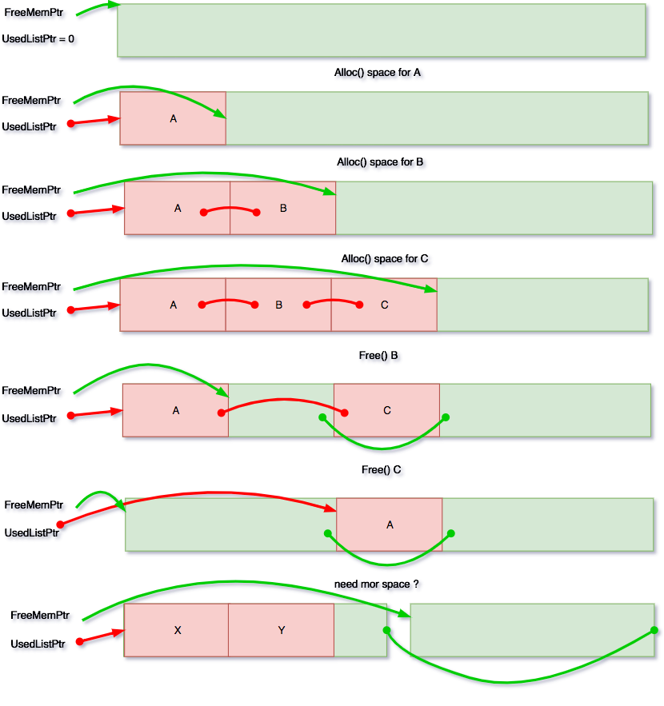

33.333 milissegundos. Este é o tempo que uma engine de jogos tem para fazer todo o processamento necessário durante um frame se quiser manter uma taxa de 30 frames por segundo.
Quando se tem um budget tão restrito de tempo, deve-se evitar incorrer em dois tipos de situação: realizar operações potencialmente lentas e realizar operações com tempo de execução variável/desconhecido. Alocação dinâmica de memória é exatamente a combinação destas duas situações. Neste post vou falar sobre como alocação dinâmica de memória pode comprometer o desempenho de um jogo e como estou abordando o problema na minha engine.
Independente da linguagem a coisa funciona mais ou menos da mesma forma. Tudo começa com uma chamada aparentemente inocente como esta:
RenderCommand *command = new
RenderCommand();
O compilador precisa separar esta chamada em 2 operações diferentes; uma para alocar memória e outra para inicializar a memória alocada, chamando o construtor da classe.
RenderCommand *command = _new (sizeof(RenderCommand));
command->RenderCommand();
O operador global __new (considerando C++ nesse caso) desce até a stdlib para fazer a alocação usando a função malloc:
void *operator new(size_t size)
{
return malloc(sie);
}
Infelizmente, malloc não é uma operação atômica nem trivial. Cada implementação da stdlib é livre pra implementar malloc da maneira que achar conveniente e esta implementação é bastante dependente do sistema operacional. Na stdlib do visual studio recorre à funções nativas do windows para alocação de memória como VirtualAlloc .
O windows (ou qualquer outro sistema operacional moderno) por sua vez, precisa garantir que haja um bloco de memória contínuo, com o tamanho requerido. Deste ponto em diante, tudo é incerto. A quantidade de memória livre pode ser suficiente, mas devido a fragmentação, não haver um único bloco contínuo suficientemente grande. O sistema operacional então precisa compactar e mover outros blocos de um lado para o outro para atender a requisição. Outra possibilidade é que simplesmente não haja memória física disponível e seja necessário despejar boa parte da memória num arquivo físico no HD .
Por não se poder garantir um tempo de execução constante, é desaconselhável – pelo menos nas camadas mais baixas da engine – realizar alocações dinâmicas a cada frame.
Embora meu exemplo tenha sido com C++, no fim das contas não importa se você desenvolve o seu jogo em Java, C# com Unity ou seja lá o que for. Assim que seu código solicitar memória, o processo será basicamente o mesmo, culminando numa chamada direta ao sistema operacional e reproduzindo o que descrevi há pouco.
Se a alocação dinâmica impõem tais custos de performance, o que fazer quando se precisa de memória, principalmente em camadas mais baixas da engine ?
Evitando intermediários
No meu caso, dividi a engine em 2 partes: A plataforma e a engine em si. Na plataforma fica toda funcionalidade dependente do sistema operacional. Todo o resto “fala” apenas com a plataforma, nunca diretamente com o sistema operacional. Toda a memória alocada é solicitada diretamente ao sistema operacional, sem todo o overhead adicional de malloc, que no final acaba fazendo as mesmas chamadas que eu fiz abaixo.
void* memoryAlloc(size_t size)
{
ASSERT(size>0, "allocation size must be greater than zero");
void* mem = VirtualAlloc(NULL, size,
MEM_COMMIT | MEM_RESERVE, PAGE_EXECUTE_READWRITE);
if (mem==0) { LogError("Error allocating memory"); }
return mem;
}
Agrupando alocações
Imagine por exemplo que seu jogo precisa alocar 10mb de memória para armazenar toda hierarquia de objetos da cena. É muito mais custoso fazer 10 alocações de 1mb do que apenas 1 alocação de 10mb.
Para casos como esse onde se conhece o tamanho ou se pode comprometer com um limite fixo de memória, é desejável fazer uma única alocação grande logo no início. No meu projeto o jogo pode, assim que é inicializado, solicitar a engine um bloco de memória onde pode guardar o ‘estado’ da execução.
struct GameData
{
Vec2 resolution;
Sprite hero;
Material material;
float x=0;
float y=0;
float step;
Sprite tiles[50];
Sprite box;
} *gameMemory = nullptr;
//---------------------------------------------------------------------------
// Engine calls this when game is loaded
//---------------------------------------------------------------------------
ldare::GameContext gameInit()
{
// We fill gameContext struct with lots of runtime
// settings our game needs the engine to set up for us
// in this case, reserving us a chunk of memory.
gameContext.gameMemorySize = sizeof(GameData);
return gameContext;
}
//---------------------------------------------------------------------------
// Engine calls this before first frame is rendered
//---------------------------------------------------------------------------
void gameStart(void* mem, GameApi& gameApi)
{
if ( gameMemory == nullptr)
{
gameMemory = (GameData*) mem;
// fill in game data structure with stuff the game needs
}
}
O jogo pode então implementar alguma forma de alocação linear simplesmente incrementando um ponteiro com base na memória retornada pela engine.
Chunk Allocator
Alocadores lineares tem suas limitações. Principalmente quando se precisa liberar os objetos alocados fora de ordem. Para casos assim, implementei um alocador que mantém 2 listas – uma para blocos livres e outra para blocos ocupados. As duas listas são mantidas no mesmo bloco contínuo de memória.
Sempre que for necessário alocar um bloco, o alocador encontra o primeiro bloco livre da lista de blocos livres (duh!), inclui este bloco na lista de blocos ocupados e recalcula o endereço do próximo bloco livre. Perceba que não existe uma busca por blocos livres. O ponteiro está sempre posicionado na posição do próximo bloco livre que na maioria das vezes será obtido com uma alocação linear.
Liberar memória é igualmente simples. O bloco é removido da lista de blocos ocupados e inserido na lista de blocos livres. Tudo isso no mesmo espaço contínuo de memória. Por mais que blocos sejam alocados e liberados, em qualquer ordem, não existe fragmentação, já que todos os blocos estão sempre ligados como uma lista encadeada.
E se precisarmos de mais memória ? Basta alocar um novo bloco, e inseri-lo na lista de ‘livres’ .
A única limitação dessa abordagem é que as alocações precisam ser sempre do mesmo tamanho evidentemente. O que nem sempre é um problema. Pode-se ter algumas destas ‘heaps’ de tamanhos diferentes para objetos diferentes que precisem ser alocados recorrentemente.
O diagrama abaixo deve deixar o conceito um pouco mais claro.

Cada bloco alocado tem um pequeno cabeçalho, que utilizo para conectar com o próximo bloco livre ou ocupado da lista. A Heap por sua vez, é uma estrutura que guarda toda a informação referentes as listas e ao bloco de memória retornado pelo sistema operacional. Como se pode ver no código a seguir.
#ifndef __LDARE_MEMORY__
#define __LDARE_MEMORY__
namespace ldare
{
struct Heap;
struct HeapAllocationHeader
{
Heap* heap; // Pool that allocated this memory;
HeapAllocationHeader* prev;
HeapAllocationHeader* next;
};
struct Heap
{
size_t memorySize; // virtual memory size
size_t objectSize; / size of objects this heap contais
size_t totalUsed; // total amount of memory used
HeapAllocationHeader* freeMemList; // start of free heap object list
HeapAllocationHeader* usedMemList; // start of used heap object list
};
// Get memory from heap
void* getHeapMemory(ldare::Heap* heap);
// Free heap memory
void freeHeapMemory(void* memory);
}
#endif
Outro benefício que este método oferece, é que é fácil saber quanta memória está sendo usada para cada coisa. Bastando ler o valor totalUsed de cada Heap pra se ter um report preciso de que tipo de quanta memória cada tipo de coisa está ocupando.
A implementação da alocação e liberação de memória a partir desta
namespace ldare
{
//---------------------------------------------------------------------------
// Get Memory from heap
//---------------------------------------------------------------------------
void* getMemory(Heap* heap)
{
// uninitialized heap huh?
if ( heap->freeMemList == 0)
{
return nullptr;
}
// get first free memory block
HeapAllocationHeader* allocationHeader = (HeapAllocationHeader*) heap->freeMemList;
// where real memory really starts
int32 headerSize = sizeof(HeapAllocationHeader);
void* allocatedMemoryStart = ((int8*)allocationHeader) + headerSize;
size_t totalAllocationSize = heap->objectSize + headerSize;
// Are there enough space for new block on this heap ?
size_t freeMemoryCount = heap->memorySize - heap->totalUsed;
if (freeMemoryCount < totalAllocationSize)
{
// the free remaining free space - if any - is not enough, so
// we just ignore it and link a new memory chunck
LogWarning("Insuficient Heap space. Growing the heap now.");
void* newMemoryBlock = ldare::platform::memoryAlloc(heap->memorySize);
heap->freeMemList = (HeapAllocationHeader*) newMemoryBlock;
heap->memorySize+=heap->memorySize;
//TODO: include a member in HEAP for counting the total wasted memory ?
}
allocationHeader->heap = heap; // set this block's heap
// remove from start of free list
HeapAllocationHeader* nextFreeBlock = allocationHeader->next;
if ( nextFreeBlock != 0)
{
nextFreeBlock->prev = 0;
}
else
{
// if this is the only block, just increment the memory
nextFreeBlock = (HeapAllocationHeader*) ((int8*)heap->freeMemList + totalAllocationSize);
}
heap->freeMemList = nextFreeBlock;
// Insert at start of used list
allocationHeader->prev = allocationHeader->next = 0;
HeapAllocationHeader* firstUsedBlock = heap->usedMemList;
if( firstUsedBlock != 0 )
{
firstUsedBlock->prev = allocationHeader;
allocationHeader->next = firstUsedBlock;
}
heap->totalUsed+=totalAllocationSize;
heap->usedMemList = allocationHeader;
memset(allocatedMemoryStart, 0xFF, heap->objectSize);
return allocatedMemoryStart;
}
//---------------------------------------------------------------------------
// Return memory to its heap
//---------------------------------------------------------------------------
void freeMemory(void* memory)
{
if (memory == 0) { return; }
// get this blcok's header
HeapAllocationHeader* allocationHeader =
(HeapAllocationHeader*)((int8*)memory - sizeof(HeapAllocationHeader));
ASSERT(allocationHeader->heap != 0, "Invalid allocation header");
Heap* heap = allocationHeader->heap;
// clear the memory
memset(memory, 0, heap->objectSize);
// fix neighbor connections
HeapAllocationHeader* prev = allocationHeader->prev;
HeapAllocationHeader* next = allocationHeader->next;
if ( next != 0 )
{
next->prev = prev;
}
if ( prev !=0)
{
prev->next = next;
}
// place it at start of free block list
allocationHeader->prev = 0;
allocationHeader->next = heap->freeMemList;
HeapAllocationHeader* firstFreeBlock = heap->freeMemList;
if (firstFreeBlock != 0)
{
firstFreeBlock->prev = allocationHeader;
}
heap->totalUsed -= heap->objectSize + sizeof(HeapAllocationHeader);
heap->freeMemList = allocationHeader;
}
} //namespace ldare
Nada de paranóia
O objetivo aqui não é de maneira nenhuma estabelecer um dogma ou alguma paranóia irracional quanto a alocação dinâmica de memória, mas demonstrar o custo real e o impacto do seu uso inadvertido.
Relembrando a frase célebre de Tony Hoare, popularizada por Donald Knuth que não há impacto, seja feliz e poupe seu tempo com um belo new . Recorra a soluções mais complicadas se e quando for necessário. Como no core loop de uma game engine ;D.
Happy #GameDev‘ing